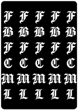

<!DOCTYPE html>
<html>

    <head>

        <title>Memory</title>

        <meta charset="utf-8">

        <script type = "text/javascript" src = "https://code.jquery.com/jquery-3.6.0.min.js"></script> 

        <style>
            body{
                overflow:hidden;
                background-image: url("back.jpg");
            }

            table{
                border-spacing: 10px;
                margin: auto;                
            }

            img{

                border-radius: 8px;
            }

            .card{
                box-shadow: 0 0 40px 10px;    /* ombra orizzontale, ombra verticale, sfocatura, spread radius */                
            }

            td{
                text-align: center;
            }
            
        </style>

    </head>


    <body id="container">

        <table></table>

        <script type = "text/javascript">

            $('#container').width(window.innerWidth);
            $('#container').height(window.innerHeight);

            

            //creazione tabella e comparsa tabella
            tab="";
			for (i=0; i<4;i++){ 
				tab+="<tr>";
				for (j=1;j<=6;j++)
					tab+="<td>"+""+"</td>";
				tab+="</tr>";
				}
				
		
            //Funziona!!
            $(document).ready(function(){
                $("table").html(tab);
                
                $(window).resize(function(){

                    $('#container').width(window.innerWidth);
                    $('#container').height(window.innerHeight);
                });

                $(".card").on("mouseover", function(e) {    //aggiunge un ombra rossa per mostrare la carta che si sta puntando
                    $(e.target).css("box-shadow", "0 0 20px 10px red");               
                    
                    $(e.target).animate({
                        width: "95%",
                        height: "95%",
                    },100)
                });

                $(".card").on("mouseout", function(e) {     
                    $(e.target).css("box-shadow", "");//fa tornare i valori di ombra a quelli precedenti

                    $(e.target).animate({
                        width: "100%",
                        height: "100%",
                    },100)
                });
                // Mostra gli id delle celle nella console per verificare la corrispondenza tra vettoreGrosso e la tabella
                $("td").each(function(index){
                    console.log($(this).find("img").attr("id"));
                });
            });

            //creo vettore con tutte le immagini del memory
            let images = [];
            for(let i = 0; i<12; i++){
                images[i]="immagini/mem_"+i+".gif";
            }
            //console.log(images);
            //invece di utilizzare una matrice, uso un vettore più lungo, per ottimizzare la "corrispondenza" tra vettore e vettoreGrosso e tra vettoreGrosso e tabella, 
            //che mi servirà per decidere le immagini nascoste dietro alla tabella
            let vettoreGrosso = [];
                //inizializzo tutto vettoreGrosso a 0
                for(let i=0; i<24; i++){
                    vettoreGrosso[i]=0; 
                }
                
            //inserisco nel vettorreGrosso(che sarebbe il campo di gioco) le immagini (2 volte per ognuna nel vettore)
            let posizioneEstratta = 0;
            for(let j = 0; j<((images.length)); j++){
                for(let y = 0; y<2; y++){
                    do{
                        posizioneEstratta = Math.floor(Math.random()*24); //estraggo un numero da 0 a 23 (tot = 24), che sarà la posizione nel vettorerGrosso in cui inserirò l'immagine del vettore images
  
                    }while(vettoreGrosso[posizioneEstratta]!=0);
                    vettoreGrosso[posizioneEstratta]=images[j]; //se la posizione estratta non è occupata, inserisco l'immagine nel vettoreGrosso  
                }
            }

            //quando l'utente schiaccia su un'immagine coperta, questa cambia e diventa la sua corrispettiva del vettoreGrosso
            $("table").on("click", "img", scopri);
            let prima=0, contaScoperti=0, inAttesa=false, win=false, scoperti = 0;
            
            function scopri(event){
                if($(event.target).attr('src') == 'immagini/coperto.gif'){ //esegue queste operazioni solo se si clicca su un immagine coperta, per evitare errori di click su un immagine già scoperta

                    console.log("cliccato sull'immagine con l'ID:", event.target.id); //controllo se gli id sono corretti
                    if(!inAttesa){// evitare altri click finché le immagini sono in attesa di essere ricoperte
                        
                        //scopro l'immagine cliccata
                        let index = parseInt(event.target.id)-1;
                        $(event.target).attr("src", vettoreGrosso[index]);
                        
                        $(event.target).removeClass("card");    //rimuove la classe per fare in modo che le immagini scoperte non si evidenzino all'hover
                        
                        if(contaScoperti==0){
                            prima = event.target; //se l'immagine cliccata è la prima, salvo nella variabile evento la prima immagine cliccata
                            contaScoperti++; 
                        } 
                        else{

                            if ($(event.target).attr('src') != $(prima).attr('src')) { // le immagini sono diverse

                                //riassegna la classe a entrambe le immagini a cui era stata rimossa
                                $(event.target).addClass('card');   
                                $(prima).addClass('card');          

                                inAttesa = true;
                                setTimeout(function () {
                                    $(event.target).attr('src', 'immagini/coperto.gif');
                                    $(prima).attr('src', 'immagini/coperto.gif');   
                                    inAttesa = false;
                                }, 1000);
                    
                            }
                            else scoperti++;
                            //se le due immagini sono uguali, restano scoperte e riazzero le due variabili utilizzate
                            setTimeout(function () {
                                contaScoperti = 0;
                                prima = 0;
                            }, 1001);

                            checkVittoria();
                        }
                    }
                }
            }

            function checkVittoria(){
                if(scoperti==12)
                setTimeout(function () {
                    alert("HAI VINTO!!!");
                }, 100);
               
            }
        </script>
    </body>
</html>